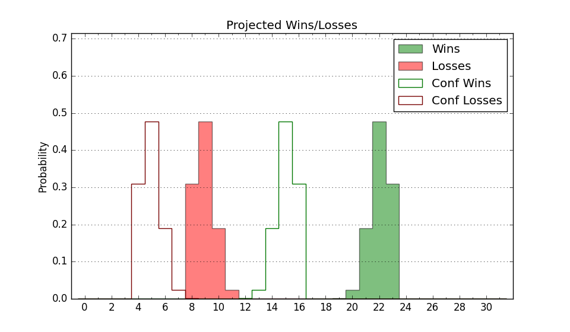

| Home | Game Probabilities | Conferences | Preseason Predictions | Odds Charts | NCAA Tournament |
| City: | Omaha, Nebraska | |
| Conference: | Big East (2nd)
| |
| Record: | 12-4 (Conf) 19-8 (Overall) | |
| Ratings: | Comp.: 21.8 (34th) Net: 21.8 (34th) Off: 116.3 (46th) Def: 94.5 (28th) SoR: 71.5 (30th) |
| Remaining | ||||||
|---|---|---|---|---|---|---|
| Date | Opponent | Win Prob | Pred. | |||
| 2/26 | DePaul (122) | 91.5% | W 81-65 | |||
| 3/1 | @ Xavier (56) | 46.9% | L 74-75 | |||
| 3/4 | @ Seton Hall (205) | 87.2% | W 73-60 | |||
| 3/8 | Butler (70) | 80.0% | W 80-70 | |||
| Previous | Game Score | |||||
| Date | Opponent | Win Prob | Result | Off | Def | Net |
| 11/6 | UT Rio Grande Valley (238) | 97.0% | W 99-86 | 7.1 | -24.1 | -17.1 |
| 11/10 | Fairleigh Dickinson (307) | 98.4% | W 96-70 | -4.0 | -4.9 | -8.9 |
| 11/13 | Houston Baptist (264) | 97.6% | W 78-43 | -6.8 | 22.9 | 16.2 |
| 11/16 | UMKC (226) | 96.4% | W 79-56 | -9.1 | 7.0 | -2.1 |
| 11/22 | Nebraska (54) | 73.8% | L 63-74 | -19.8 | -7.5 | -27.3 |
| 11/26 | (N) San Diego St. (51) | 59.1% | L 53-71 | -22.4 | -6.2 | -28.6 |
| 11/27 | (N) Texas A&M (22) | 41.5% | L 73-77 | 2.0 | 0.4 | 2.4 |
| 11/30 | (N) Notre Dame (88) | 77.3% | W 80-76 | -0.6 | -9.2 | -9.9 |
| 12/4 | Kansas (18) | 54.9% | W 76-63 | 6.1 | 10.7 | 16.8 |
| 12/7 | UNLV (95) | 88.2% | W 83-65 | 11.1 | -4.6 | 6.5 |
| 12/14 | @Alabama (6) | 13.3% | L 75-83 | -2.9 | 9.4 | 6.5 |
| 12/18 | @Georgetown (84) | 62.2% | L 57-81 | -19.3 | -22.6 | -41.9 |
| 12/21 | Villanova (47) | 70.5% | W 86-79 | 22.4 | -22.4 | -0.0 |
| 12/31 | St. John's (24) | 57.2% | W 57-56 | -12.5 | 18.1 | 5.6 |
| 1/3 | @Marquette (27) | 29.4% | L 71-79 | -1.6 | -0.5 | -2.1 |
| 1/11 | @Butler (70) | 54.0% | W 80-76 | 6.9 | -2.2 | 4.7 |
| 1/14 | Providence (85) | 84.9% | W 84-64 | 1.6 | 8.2 | 9.8 |
| 1/18 | @Connecticut (31) | 33.2% | W 68-63 | 13.8 | 7.1 | 20.8 |
| 1/21 | @DePaul (122) | 75.9% | W 73-49 | 0.1 | 30.2 | 30.2 |
| 1/25 | Seton Hall (205) | 95.9% | W 79-54 | 7.8 | -2.8 | 5.0 |
| 1/29 | Xavier (56) | 75.1% | W 86-77 | 16.6 | -14.2 | 2.4 |
| 2/1 | @Villanova (47) | 41.2% | W 62-60 | -18.8 | 22.8 | 4.0 |
| 2/5 | @Providence (85) | 62.3% | W 80-69 | 0.8 | 7.0 | 7.8 |
| 2/8 | Marquette (27) | 58.7% | W 77-67 | 23.3 | -7.0 | 16.3 |
| 2/11 | Connecticut (31) | 62.8% | L 66-70 | -11.4 | 3.7 | -7.6 |
| 2/16 | @St. John's (24) | 28.2% | L 73-79 | 0.1 | -3.9 | -3.8 |
| 2/23 | Georgetown (84) | 84.8% | W 80-69 | -0.1 | -3.7 | -3.8 |
| Stats & Trends | |||||
|---|---|---|---|---|---|
| Current | Day | Week | Month | Season | |
| Composite | 21.8 | +0.1 | -0.3 | +0.1 | -3.8 |
| Comp Rank | 34 | -- | -- | -- | -20 |
| Net Efficiency | 21.8 | +0.1 | -0.2 | +0.2 | -- |
| Net Rank | 34 | -- | -- | +1 | -- |
| Off Efficiency | 116.3 | +0.1 | -0.1 | +1.3 | -- |
| Off Rank | 46 | -- | -2 | +6 | -- |
| Def Efficiency | 94.5 | +0.0 | -0.1 | -1.0 | -- |
| Def Rank | 28 | -- | +2 | -4 | -- |
| SoS Rank | 21 | -- | -8 | -9 | -- |
| Exp. Wins | 22.1 | -0.0 | +0.1 | +0.8 | -0.9 |
| Exp. Conf Wins | 15.1 | -0.0 | +0.1 | +0.8 | +1.1 |
| Conf Champ Prob | 8.7 | +0.1 | -13.0 | -16.4 | -21.0 |

| Advanced Stats | ||
|---|---|---|
| Stat | Value | Rank |
| Off Eff FG % | 0.597 | 8 |
| Off Ast Ratio | 0.197 | 6 |
| Off ORB% | 0.263 | 251 |
| Off TO Rate | 0.151 | 211 |
| Off FT Ratio | 0.317 | 218 |
| Def Eff FG % | 0.431 | 8 |
| Def Ast Ratio | 0.112 | 12 |
| Def ORB% | 0.232 | 13 |
| Def TO Rate | 0.107 | 360 |
| Def FT Ratio | 0.180 | 1 |